Research data management
👩💻👨💻
with DataLad
|
Adina Wagner @AdinaKrik |
Michael Hanke @eknahm |
|
|
Psychoinformatics lab,
Institute of Neuroscience and Medicine (INM-7) Research Center Jülich |
Slides: https://github.com/datalad-handbook/course/
Welcome!
Approximate workshop schedule- Session 1 (now, 13.30-15.00)
-
Logistics & Intro,
Hands-on Terminal Basics,
Demo of core functionality - Session 2 (today, 16.00-18.00)
- Hands-on DataLad Basics
- Session 3 (tomorrow, 11.00-12.30)
- Sharing and Collaboration
- Session 4 (tomorrow, 13.30-15.00)
-
Computational reproducibility,
Outro,
Final QA
Logistics and links
-
You can download these slides at
https://doi.org/10.5281/zenodo.6827086 (scan the QR code), and you can find their sources at
github.com/datalad-handbook/datalad-course
- Some of today's code-along workshop contents are at psychoinformatics-de.github.io/rdm-course
- The workshop will be interactive. If you do not have the software installed on your own system, you can access a Jupyterhub from your browser at datalad-hub.inm7.de
- You can log in to the Juypterhub with a pre-set username (take one out of the jar) and a self-set password. Remember the password for tomorrow!
Interactivity
-
There are no stupid questions; ask anything any time
- Something doesn't look right on your system? Stick a post-it to your screen. We'll take a look together
- We're available outside of sessions, too. Chat about your use cases or questions over a coffee or meal
After the workshop
-
If you have a question after the workshop, you can reach out for help:
- Reach out to to the DataLad team via
- Matrix (free, decentralized communication app, no app needed). We run a weekly Zoom office hour (Thursday, 4pm Berlin time) from this room as well.
- the development repository on GitHub
- Reach out to the user community with
- A question on neurostars.org
with a
dataladtag - Find more user tutorials or workshop recordings
- On DataLad's YouTube channel
- In the DataLad Handbook
- In the DataLad RDM course
- In the Official API documentation
Audience response system
Use your phone to scan the QR code, or open the link in a new browser windowOn a scale of rubber ducks...
What will we do?
- The workshop centers around DataLad (version 0.16 and up) for real-world research data management use cases
|
standard introduction. |
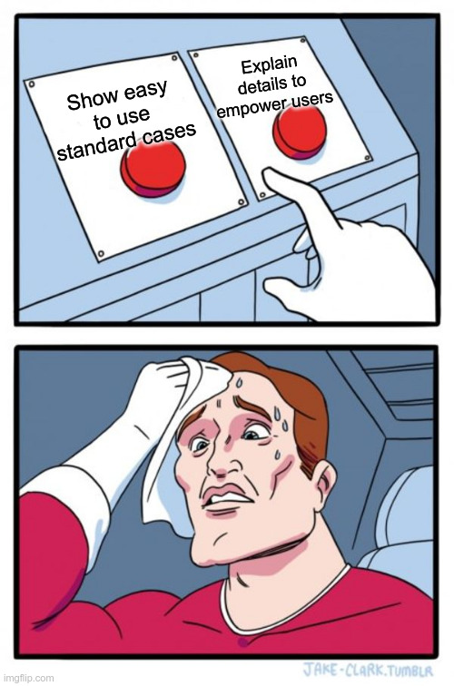 |
Research data management
Common problems in science
You write a paper & stay up late to generate good-looking figures,
but you have to tweak many parameters and display options.
The next morning, you have no idea which parameters produced which
figures, and which of the figures fit to what you report in the paper.


Illustration adapted from Scriberia and The Turing Way
https://co.pinterest.com/pin/551128073121451139//imgcredit>
http://phdcomics.com/comics.php?f=1693
http://phdcomics.com/comics.php?f=1693
http://phdcomics.com/comics.php?f=1693

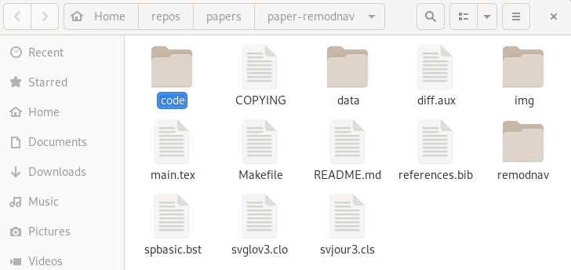 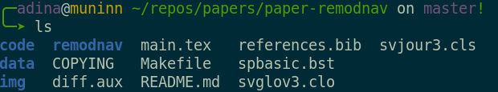 File viewer and terminal view of a DataLad dataset


Apart from local computing infrastructure (from private laptops to computational clusters), datasets can be hosted in major third party repository hosting and cloud storage services. More info: Chapter on Third party infrastructure.
DataLad relies on Git to create a revision history with detailed information on
what was changes, when, and how. Therefore, you should tell Git who you are and
configure a Git identity (name and email)
Set a Git identity using
Common problems in science
Your research project produces phenomenal results, but your
laptop, the only place that stores the source code for the
results, is stolen or breaks
Common problems in science
A graduate student complains that a research idea does not work.
Their supervisor can't figure out what the student did and how,
and the student can't sufficiently explain their approach
(data, algorithms, software).
Weeks of discussion and mis-communication ensues because the
supervisor can't first-hand explore or use the students project.
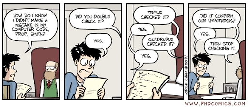
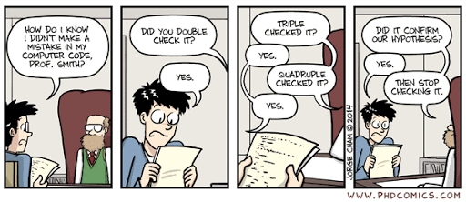
Common problems in science
You wrote a script during your PhD that applied a specific
method to a dataset. Now, with new data and a new project, you
try to reuse the script, but forgot how it worked.

common problems in science
You try to recreate results from another lab's published paper.
You base your re-implementation on everything reported in their paper,
but the results you obtain look nowhere like the original.
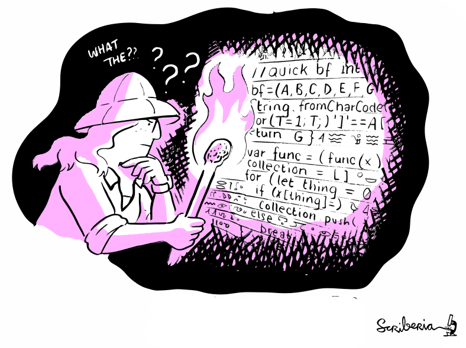
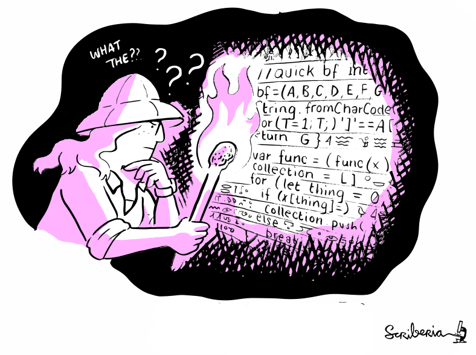
common old problems in science
All these problems were paraphrased from
Buckheit & Donoho, 1995
Let's do better!
- A command-line tool, available for all major operating systems (Linux, macOS/OSX, Windows), MIT-licensed
- Build on top of Git and Git-annex
- Allows...
- ... version-controlling arbitrarily large content
- version control data and software alongside to code!
- ... transport mechanisms for sharing and obtaining data
- consume and collaborate on data (analyses) like software
- ... (computationally) reproducible data analysis
- Track and share provenance of all digital objects
- ... and much more
- Completely domain-agnostic
Acknowledgements
|
Funders

Collaborators
|

Examples of what DataLad can be used for:
- Behind-the-scenes infrastructure component for data transport and versioning (e.g., used by OpenNeuro, brainlife.io , the Canadian Open Neuroscience Platform (CONP), CBRAIN)

Examples of what DataLad can be used for:
- Creating and sharing reproducible, open science: Sharing data, software, code, and provenance 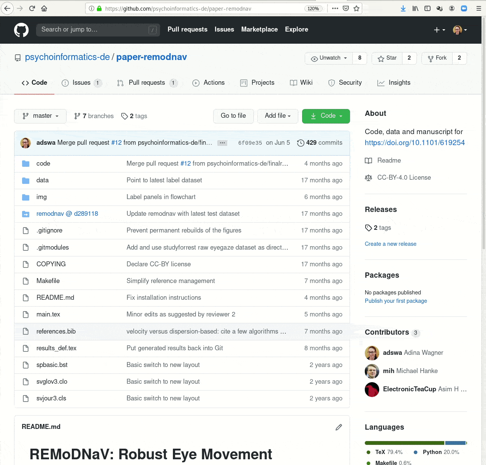
Examples of what DataLad can be used for:
- Creating and sharing reproducible, open science: Sharing data, software, code, and provenance

Examples of what DataLad can be used for:
- Central data management and archival system

Examples of what DataLad can be used for:
- Scalable computing framework for reproducible science 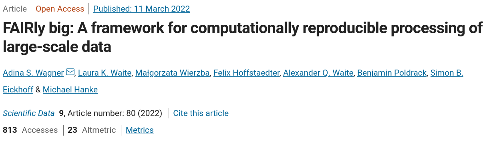

Core concepts & features
Everything happens in DataLad datasets
Dataset = Git/git-annex repository
- content agnostic
- no custom data structures
- complete decentralization
- Looks and feels like a directory on your computer:
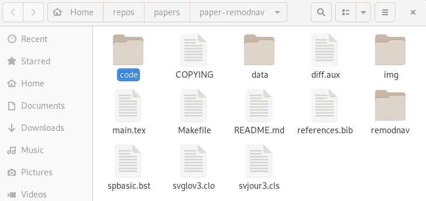 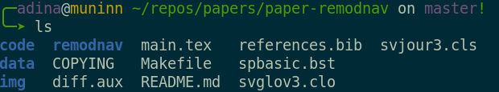 File viewer and terminal view of a DataLad dataset
version control arbitrarily large files
- Non-complex DataLad core API (easy for data management novices)
- Pure Git or git-annex commands (for regular Git or git-annex users, or to use specific functionality)
Stay flexible:
Use a datasets' history
- reset your dataset (or subset of it) to a previous state,
- revert changes or bring them back,
- find out what was done when, how, why, and by whom
- Identify precise versions: Use data in the most recent version, or the one from 2018, or...
Consume and collaborate
machine-readable, re-executable provenance
Seamless nesting and dataset linkage
Third party integrations
Apart from local computing infrastructure (from private laptops to computational clusters), datasets can be hosted in major third party repository hosting and cloud storage services. More info: Chapter on Third party infrastructure.
Prerequisites: Terminal
- DataLad can be used from the command line
- ... or with its Python API
- ... and other programming languages can use it via system call
datalad create mydatasetimport datalad.api as dl
dl.create(path="mydataset")# in R
> system("datalad create mydataset")
Prerequisites: Terminal
Prerequisites: Installation and Configuration
- Your installed version of DataLad should be at least 0.16
datalad --version
0.17.1$ git config --list
user.name=Adina Wagner
user.email=adina.wagner@t-online.de
[...]
$ git config set --global user.name "Adina Wagner"
$ git config set --global user.email "adina.wagner@t-online.de"Prerequisites: Using DataLad
- Every DataLad command consists of a main command followed by a sub-command. The main and the sub-command can have options. 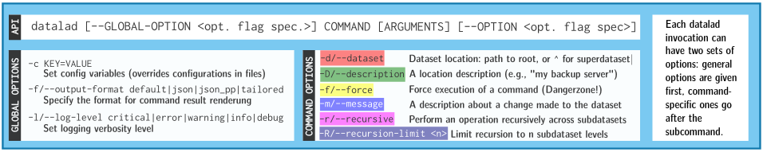
- Example (main command, subcommand, several subcommand options):
$ datalad save -m "Saving changes" --recursive - Use --help to find out more about any (sub)command
and its options, including detailed description and examples (q to close). Use -h to get a short
overview of all options
$ datalad save -h Usage: datalad save [-h] [-m MESSAGE] [-d DATASET] [-t ID] [-r] [-R LEVELS] [-u] [-F MESSAGE_FILE] [--to-git] [-J NJOBS] [--amend] [--version] [PATH ...] Use '--help' to get more comprehensive information.